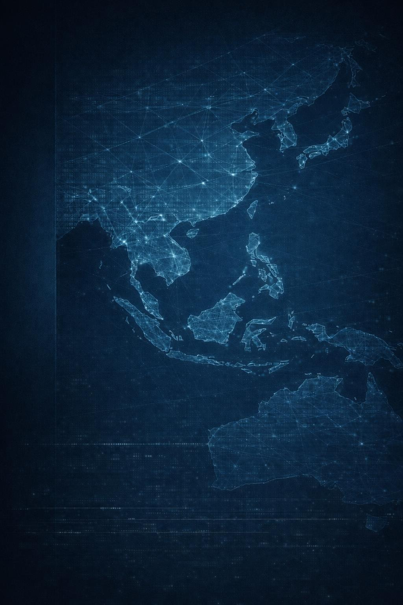

米国グローバルシステム
ドル決済、同盟網、技術管理、制裁、資源取引、前方展開能力を含む 米国中心の経済・安全保障ネットワークを分析します。

米国グローバルシステムと中国グローバルシステムの再編を、 経済と安全保障の両面から分析する独立研究プロジェクト
Overview
単一市場としてのグローバル化から、複数の経済・安全保障システムへと移行する世界構造を、 日本語で体系的に把握するための分析基盤です。
WESTPAC SENTINEL は、世界経済秩序と安全保障環境を分離せず、 相互に接続された一つの構造として捉えます。決済、貿易、エネルギー、資源、物流、制裁、 技術管理、同盟、抑止は、個別の現象ではなく、同時に再編される構造要素です。 本サイトは、それらの重なりを可視化し、分析の基盤を整備することを目的とします。
Core Premise
本ページは初期トップページです。今後、分析、方法論、データ基盤を順次拡張します。
Research Areas
経済構造と安全保障構造の交差点に位置する主要テーマを、四つの領域から整理します。
ドル決済、同盟網、技術管理、制裁、資源取引、前方展開能力を含む 米国中心の経済・安全保障ネットワークを分析します。
人民元決済、物流接続、資源調達、一帯一路、周辺・外縁部の戦略的プレゼンスを含む 中国中心の構造形成を分析します。
サプライチェーン、海上交通路、重要鉱物、エネルギー、国別依存度の変化を通じて、 複数圏への再編を把握します。
同盟、抑止、軍事バランス、地域紛争、経済ブロック化の相互作用を分析し、 安全保障環境の変容を追跡します。
Methodology
公開統計と公開安全保障情報を統合し、定量・定性の両面から世界構造の変化を分析します。
Analysis
今後、この領域に主要分析を蓄積します。初期段階では研究骨格の提示を優先しています。
米国グローバルシステムと中国グローバルシステムの比較分析。
決済ネットワーク分岐が国際秩序に与える影響の分析。
エネルギー輸送・海上交通路・安全保障環境の連動分析。
Data
今後、国別配置、対米依存、対中依存、エネルギー依存、安全保障関係の基礎データを整理します。